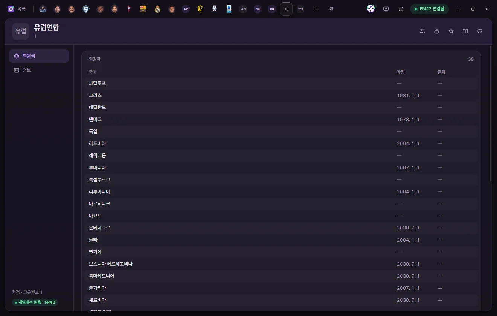
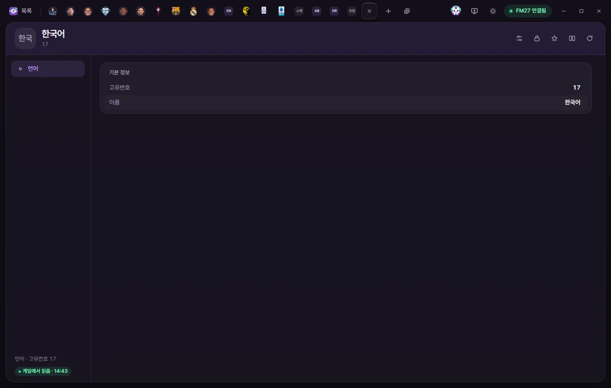

편집 탭
협정·언어
협정(유럽연합 같은 나라들의 묶음)의 회원국과, 게임 속 언어 하나를 보는 탭입니다. 두 탭에는 고칠 수 있는 값이 없습니다.
협정 탭과 언어 탭은 보기만 하는 탭입니다. 고칠 수 있는 칸이 없어서 저장 막대도 나오지 않습니다.
두 탭의 머리 오른쪽에도 프리셋, 고정, 즐겨찾기, 비교, 게임에서 다시 읽기 단추가 있습니다. 고칠 값이 없으므로 쓸모 있는 것은 즐겨찾기, 비교, 다시 읽기입니다. 선수 탭 머리
협정

여는 법
- 협정 목록에서 이름을 누릅니다.
- 국가 탭의 가입한 협정 목록에서 협정을 누릅니다.
이름 아래에 고유번호와 짧은 이름이 보입니다. 숫자 카드는 없습니다. 하위 페이지는 회원국과 정보 2개입니다.
회원국
이 협정에 가입한 나라가 가나다순으로 보입니다(국가, 가입, 탈퇴 날짜). 나라 이름을 누르면 국가 탭이 열립니다.
- 회원국은 나라마다 가진 '가입한 협정' 목록에서 모읍니다. 그래서 국가 목록을 아직 읽지 않았으면 먼저 읽어 옵니다.
- 회원국을 더하거나 빼는 기능은 아직 없습니다.
정보


고유번호, 이름, 짧은 이름입니다. 모두 보기만 합니다.
언어


여는 법
언어 목록에서 이름을 누릅니다.
언어 페이지
고유번호와 이름만 있습니다. 보기만 합니다.
선수나 스태프가 할 줄 아는 언어와 수준은 언어 탭이 아니라 그 사람 탭의 언어 페이지에서 고칩니다. 선수 언어, 스태프 언어